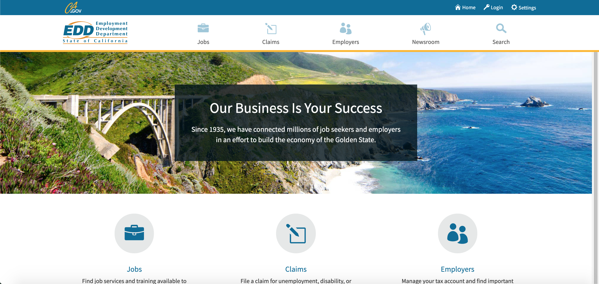

Case Study-UC Berkeley
Tools Used: Adobe Sketch, and Invision
Role: UI Designer
The goal is to create a responsive web design for a government organization. I decided to redesign the website for the Employment Development Department (EDD). The EDD focuses on making sure that citizens in California get their employment benefits should anything occur. I was focusing on making sure that the users can optimially search for their new dream job.

I conducted a heuristic evaluation on the website. This meant that I made notes about the positive and negatives of the overall website design. This is the screen that is displayed when you enter the page entitled Jobs. The minute you open the page, the user gets to see a ton of links on the screen. In addition, some of the links are duplicates. That was when I decided that I needed to filter the links. I did what was called a card sorting activity. This allowed me to create a simple navigation menu (This will be described in the Navigation Screens).
This is the Home Screen of the Employment Development Department website. I noticed that there was repition. There are icons with descriptions in the navigation menu as well as the main screen. I learned that when I design a screen, it is important to avoid repition.
When I took a look at the website, I knew it was confusing but I wanted to see how other potential users would react. The goal was to see if they could get to the page entitled CalJobs Portal.
I asked two people to sit through a user test on the current website.
During the user test, I monitored the following:
Both of the users were able to reach the screen, but it took them a while. Here is a video of a user test.
This user took 1:33 to navigate from the home page of the website to the CalJobs Portal. While conducting the test, the user mentioned that he did not like the duplicate links and wished that there was a way to make it optimized. He also complained that the overall flow was difficult to comprehend. These user tests showed that my designs need to be clean and crisp.


These are the final screens for the Cal Jobs Portal. Users can search for their new job by either entering the query into the search bar or selecting the category of their interest. The results would be categorized into two categories (Job Opening and Top Comapnies). Job Openings show the jobs that are currently seeking employees. Top Companies filters the results based on company ratings. It will also show how many positions are available and allow the user to see additional details and decide whether they want to apply for the position or not. Each of the links titled "Apply" will open a new tab that will showcase the application for the job. This will allow the user to easily switch between the Cal Job Portal page and the job application.


This is the Cal Jobs Portal designed for iOS. The flow for the mobile version is exactly the same as the Desktop. The only additional features I added were a microphone and a filter button. I added the microphone because I wanted to give the users an opportunity to dictate what they want to search for. I added a filter button because sometimes the search results can be very long. It might be a pain for the user to sift through the results.

This is the style guide that we developed for this project. The main colors we used were blue, yellow, and white. We used blue to create a calm feeling for the website. We used shades of yellow and orange so that we could maintain the California theme throughout the website. The white was a text color for the headings. The fonts we used were Raleway, Helvitica, and Arial. Raleway is generally used as a heading which is why we decided to use that font. This was mainly used for the main headings of the page (e.g. header, and title of the page). Helvetica Neuve is generally used as text font. We chose this font because we believed that it was the font that was legible. Legibility is an important factor to consider when re-designing a website of a government organization. This font was used for sub-headings (e.g. main category cards). Arial was another font we used for text. This was mainly used for paragraph text within the cards.